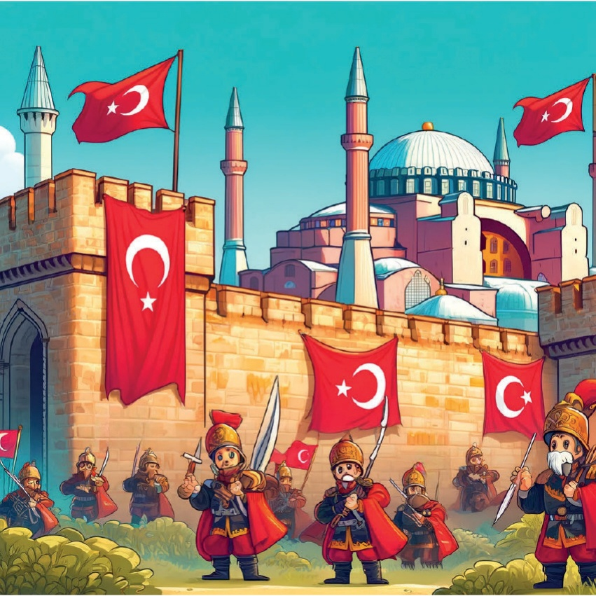
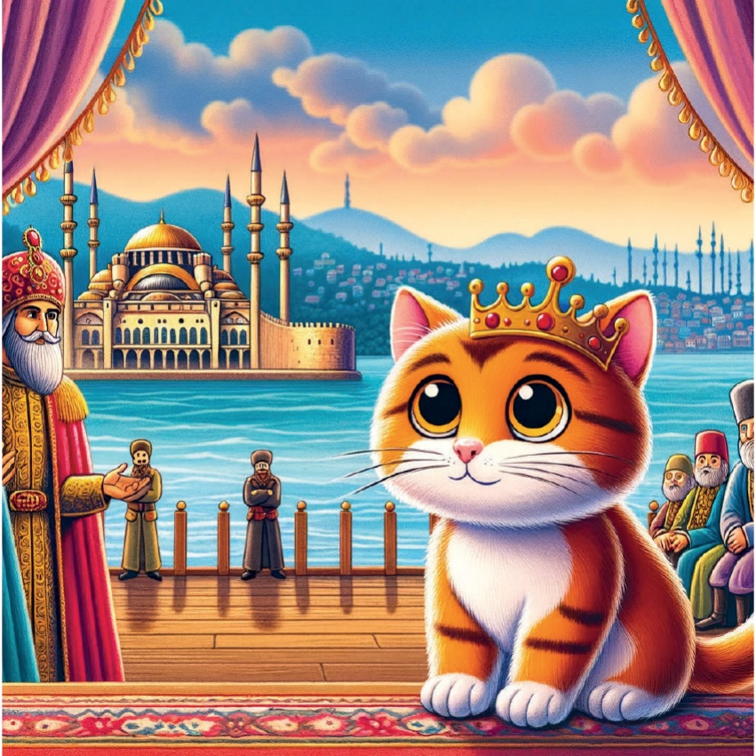

1

2

3
د اینکه یوه وخت په یوه کوچنی، کنکوره Karamel باندې یوه کنکوره وه چې له تારીخ څخه زده کړو سره مینه وه. یوه ورځ، هغه په Rich history `Ø͏ÁÔôáČ͒`Ø͒͏«µ͠ČĒ͏áª͏JͣČËÁú ویاړلو علم زده کړو ته نیش ونیل.
4
5
مارمارا منطقة - إسطنبول:
فتح القسطنطينية
.`č`ÔÌċĒ͒͏Ē͒áô͏Ή`Ē͒%Ē͒`Øs͠Ì͏
حيث تعلمت عن الفتح
áª͏áØĒ͒`Ø͒ÁØáôÌ͏s͏G͠Ì͒`Ø͏3¿Ô͏
المفوق في عام 1453.
J¿ÁĒ͏·Ø͒͏Ô`ČË͏͒¿͏Ø͏áª͏͒¿͏Ώ`Ø͒ÁØ͏
ÔôÁČ͏`Ø͏͒¿͏ČÁĒ͏áª͏͒¿͏8͒͒áÔ`Ø͏ÔôÁČú
6

7
آیژین رېغون - ازمیر:
هیرودوت، تېرتېر يازمېر
چې هوښیار شو له هیرودوت،
د هیرودوت په اړه وه.
د هغه د ژوند په اړه پوهې ورکړل.
د هغه د سفرونو په اړه 이야기ونه کړل.
د هغه د کتابونو په اړه بحث وکړل.
8
9
Mediterranean Region - Antalya:
سانت نيكولاس
Patara ولاړ چېرې.
د هغه د ژوند په اړه ډیری 이야 هاغه دي چې هغه د محتاجانو په اړه مهربان و او د ماشومانو ساتنه یې کوله.
د هغه له خوا ووې conciencia هاغه وه چې هغه د محتاجانو په اړه مهربان و او د ماشومانو ساتنه یې کوله.
د هغه د ژوند په اړه ډیری 이야 هاغه دي چې هغه د محتاجانو په اړه مهربان و او د ماشومانو ساتنه یې کوله.
10
11
مرکز اناطولیہ - انقرة:
مصطفی کمال أتاتورک
.`Č`ÔÌ͏͒¿Ø͏͒Č`·Ì͏͒á͏ØË`Č`͏
Ή¿Č͏Ē¿͏Ì`ČØ͏`sá͒͠͏3͠Ē͒`ª`͏.Ô`Ì͏͒`͒ͣČË͏
͒¿͏ªá͠ØČ͏áª͏ÔáČØ͏JͣČËÁú͏
د هغه هېوادलाई استقلال ته ورساند.
`Ø͏ÁÔôÌÔØ͒͏Ô`Ø͏ČªáČÔĒú
12
13
سیاه دریایی منطقهی - تربزن:
د تربزن په نوم生まれた.
د اتومات په سلطنت کې.
14

15
سومریان او گبکلی تپه
سومریان او گبکلی تپه
د在全球 د معابد په توګه.
16
17
شرق ανατολια - ارزروم:
او وليا چليبي
د او وليا چليبي په اړه،
او يوه مسافرې او کتاب نوي لیکوال.
زه ډیری سفرونه وکړل او هغه ځایونو په اړه یې لیکنې وکړل چې یې لیدل.
18
19
دغه واقعې د هغې هېواد جوړولو په موخه رامینځته شوې و.
د هغې هېواد د تاریخ په جوړولو کې مهم رول வகی کړی و.
دغه واقعې د هغې هېواد د کلتور او هنجارونو په جوړولو کې مهم رول வகی کړی و.
20
21
22